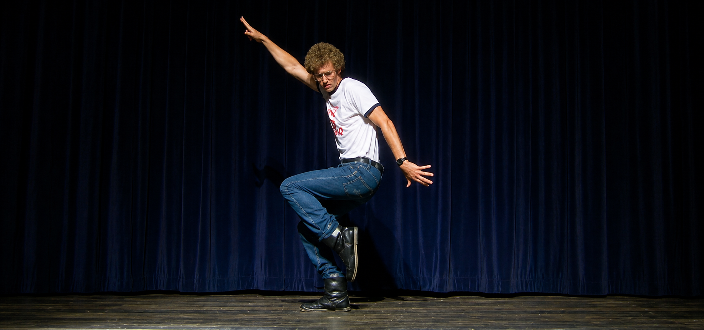
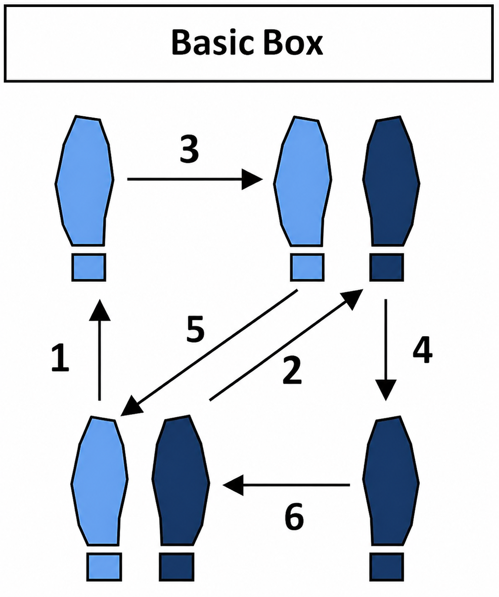
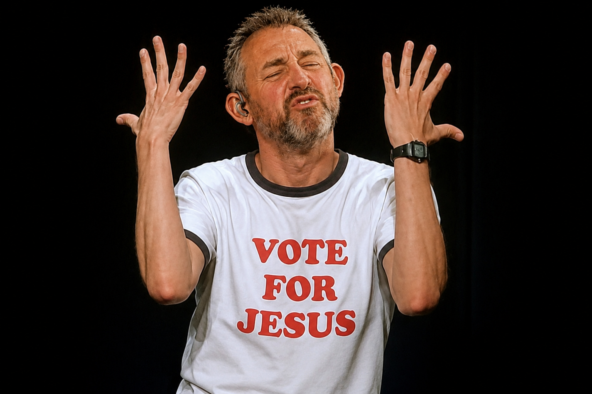

Jesus Taught Me a Different Dance

I never really learned to dance.

Not smooth.
Not polished.
Just one more imperfect step... toward Jesus.
I still remember junior high gym class.
Seventh grade.
They were trying to teach us the box step.

It looked simple on paper.
My feet had other ideas.
For some students, it seemed almost effortless. Their feet moved naturally. They found the rhythm. They smiled as though they had always known how to dance.
Not me.
I could memorize the pattern.
Left foot.
Right foot.
Close.
Back.
Side.
Close.
But somehow my feet and the music never became friends.
I wasn't graceful.
I wasn't smooth.
I wasn't the kid everyone looked at and thought, "Now that's how you dance."
I simply clunked my way through it.
For years I assumed that little memory had no lasting significance.
Then, after I was born again in 2015, Jesus unexpectedly brought that memory back to me.
It was as though He smiled and said,
"Greg, I'm going to teach you another dance."
"We'll call it JesusDance."
"This dance won't look like the dances you've seen before."
"In fact, many people won't understand it."
At first I thought He meant He was going to make me into a graceful spiritual dancer.
Instead, He began teaching me something much more humbling.
He wasn't promising elegance.
He was inviting relationship.
The dance itself became deeply personal.
Not generic.
Not mass-produced.
Not a choreography designed for millions.
A custom dance.
A dance fitted to one disciple.
Me.
That realization was surprisingly freeing.
Because I've never felt spiritually smooth.
Even after years of trying to follow Christ, I still often feel like the awkward seventh-grader counting under his breath while everyone else seems to hear music I can barely find.
Sometimes I think,
"Am I doing this right?"
Sometimes I wonder whether I'm stepping on my Partner's feet.
Sometimes I feel embarrassingly clumsy.
Then I remember something important.
The point of partner dancing isn't becoming famous for your footwork.
The point is learning to respond to your Partner.
Perhaps discipleship is much the same.
When we're young in Christ—or even when we've been following Him for years—we naturally focus on the steps.
"Am I doing this correctly?"
"Is my theology perfect?"
"Am I making the right move?"
Over time, perhaps Jesus gently shifts our attention away from the choreography and toward Himself.
Less counting.
More listening.
Less performing.
More responding.
The dance becomes less about technique and more about relationship.
That doesn't mean every dance looks alike.
Some disciples move with remarkable grace.
Others seem born with rhythm.
Still others quietly inspire generations by their steady, beautiful faith.
I admire those dancers.
I simply don't happen to be one of them.
My own journey has often felt rugged.
Improvised.
Experimental.
Sometimes confusing.
Sometimes strange.
Sometimes difficult even for me to explain.
For a long time I worried about that.
Now I worry much less.
Recently Jesus, John and I redeemed John Cougar Mellencamp's song I Need a Lover into a conversation between Jesus and me.
One verse surprised me because it felt less like songwriting and more like confession.
Jesus gets me but others they don't.
Half-baked disciple still searching for home.
I'm new to Jesus so dancin' real slow.
Got no rhythm.
Believe me—I ain't the way to go.
Oddly enough, those words brought peace.
Not because they lowered my aspirations.
But because they lowered my need to appear competent.
There is enormous freedom in admitting,
"I am still learning this dance."
There is freedom in saying,
"Please don't assume my awkward choreography is supposed to become yours."
Jesus has many disciples.
He teaches many dances.
Some resemble classical ballroom.
Some resemble quiet prayer.
Some resemble compassionate service.
Some resemble patient endurance.
Mine may resemble interpretive dance more than ballroom.
It may look unusual.
It may even appear strange.
But I have gradually become less interested in how my dancing appears to spectators and more interested in whether my Partner is smiling.
That changes everything.
A ballroom competition is performed for judges.
Every movement receives a score.
A dance shared in a living room between two people who love one another has a completely different purpose.
It may include missed steps.
Laughter.
Recoveries.
Improvisation.
Imperfection.
Yet it can still be beautiful because the relationship—not the performance—is the point.
I suspect Jesus knows exactly how awkward I am.
He knew that before He invited me onto the dance floor.
Nothing about my clumsiness surprised Him.
Nothing about my lack of rhythm disqualified me.
He simply keeps extending His hand.
And whenever I stumble, I almost hear Him say,
"Keep coming My way."
That, to me, is JesusDance.
Not performing perfectly.
Not becoming the example everyone should imitate.
Not assuming my journey should become someone else's template.
Simply accepting the hand of Christ again today...
...and taking one more imperfect step with joy.
If there is anything worth copying from my life, it is not my choreography.
It is only this:
Keep saying yes to Jesus when He asks you to dance.
Then let Him teach your steps.
Part Two: The Song Explains the Dance
The song becomes a confession after the essay.
The first piece says: Jesus taught me a different dance.
This second piece says: And yes, from the outside, that dance may look crazy.
I Worship Jesus In Ways That Seem Crazy
…I worship Jesus in ways that seem crazy
I worship Jesus in ways that seem mad
I worship Jesus in ways that seem crazy
My God He knows this
and says a
Keep comin’ My Way
…Well I've been preachin’ streets up and down
Telling sinner people Jesus’ comin’ ‘round
If you're confused, my mind it's different
Hey, I'm no freak just seeking more light
…Jesus gets me but others they don't
Half-baked disciple still searching for home
I'm new to Jesus so dancin’ real slow
Got no rhythm
believe me I ain't the way to go
…I worship Jesus in ways that seem crazy
Jesus He gets me and won't go away
I worship Jesus in ways that seem crazy
My God He knows this
and just says a
Keep comin’ My Way
…Well I got wiped out by the Babylon life we're living
So ah-I quit my job, played the fool, headed for home
And I'm not askin' to be understood, forgiven
I just can't keep playing it normal a
playing safe no more
…I worship Jesus in ways that seem crazy
I worship Jesus in ways that seem mad
I worship Jesus in ways that seem crazy
My God He knows this
and just says a
Keep comin’ My Way
…I worship Jesus in ways that seem crazy
Jesus He gets me and won't go away
I worship Jesus in ways that seem crazy
My God He knows this
and just says a
Keep comin’ My Way
…You bet cha
What The Song Means
The repeated burden of the song is this:
I worship Jesus in ways that seem crazy
I worship Jesus in ways that seem mad
The important word is seem.
Not necessarily are crazy.
Not necessarily are mad.
But seem crazy to people watching from the outside.
That fits the whole box-step metaphor. A person watching from the bleachers may see awkward movement, strange timing, irregular steps, and no recognizable choreography. But the person inside the dance may be responding to cues only they can feel.
The song is not saying, “Everyone should dance like me.”
It is saying, “This is the dance Jesus is using to keep me coming toward Him.”
The repeated answer from Jesus is the heart of the song:
My God He knows this
and just says a
Keep comin’ My Way
That line changes the whole meaning.
The song is not mainly about Greg defending himself to outsiders.
It is about Greg hearing Jesus say, “I know what this looks like. I know how unusual your worship is. I know your mind works differently. But keep coming toward Me.”
That is mercy.
That is discipleship for an awkward dancer.
Then comes the humbling center:
Jesus gets me but others they don't
Half-baked disciple still searching for home
I'm new to Jesus so dancin’ real slow
Got no rhythm
believe me I ain't the way to go
This is where the song becomes spiritually safe.
Because it refuses to turn Greg into the model.
It does not say, “Follow me.”
It says almost the opposite:
“I am not the pattern. Jesus is the pattern. I am a half-baked disciple, still learning, still searching, still dancing slowly.”
That humility matters.
The song gives permission to be unusual without becoming arrogant about being unusual.
It gives permission to be led personally by Jesus without demanding that everybody else recognize, approve, or imitate the dance.
Then the Babylon verse explains why the dance had to change:
Well I got wiped out by the Babylon life we're living
So ah-I quit my job, played the fool, headed for home
That sounds like rupture.
Collapse.
Exit.
A man no longer able to keep performing “normal.”
Not because normal is always bad.
But because, for him, normal had become spiritually unlivable.
So the song becomes a testimony of leaving one dance floor and stepping onto another.
Leaving Babylon’s rhythm.
Leaving respectable performance.
Leaving “playing it safe.”
And trying, awkwardly but sincerely, to come home to Jesus.
The Dance Today

Maybe I still don't have much rhythm. Maybe my dance still looks awkward. Maybe I still count the steps more than I should. But somewhere along the journey... I stopped worrying so much about what the audience thought. I became much more interested in following my Partner.
I'm still learning the dance.
But I'm dancing with joy.
The Real Refrain
The final meaning I see is this:
This is not a song about being crazy.
It is a song about being understood by Jesus when not understood by others.
It is about the relief of saying:
“My worship may look strange. My path may look clumsy. My dance may not be transferable. But Jesus knows me. Jesus gets me. Jesus has not gone away. And Jesus keeps saying, ‘Keep coming My Way.’”
That is the real refrain.
Not crazy.
Not mad.
Keep coming My Way.